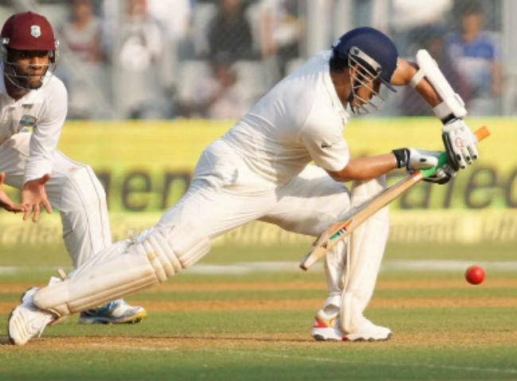

Sports
I would call myself a sporty person because I enjoy playing many sports. Two of my favourite sports are football and cricket. I play cricket at a much more serious level than football. With football I just like going down to the garden and playing with anyone. But I play serious cricket in a place called Mahul that is next to Chembur in Mumbai. I play with older people and I enjoy the challenges that cricket comes with. I play a little bit of football at schools for about 4-5 hours every week. My two favourite football teams are Liverpool and Manchester city. I support India in international cricket and Mumbai Indians in the IPL. My 5 favourite footballers are Mohammed Salah Phil Foden Kylian Mbappe and Erling Halaand and Messi. My top 5 favourite cricketers and Brian Lara, Virat Kohli, Sachin Tendulkar, Rohit Sharma and Chetaswar Pujara.